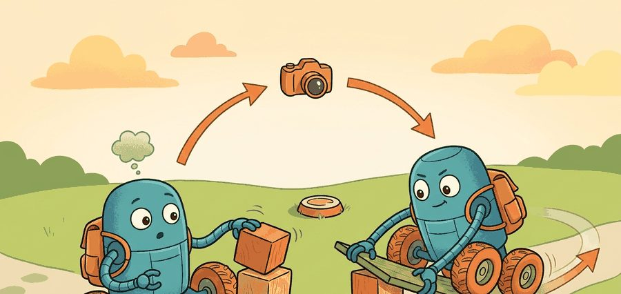
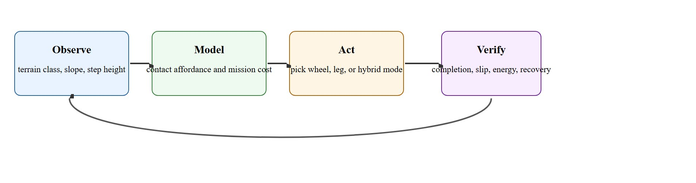

"Mobility is morphology plus a contract with the ground."
A Builder's Locomotion Notebook

The morphology analysis here builds directly on the nonholonomic motion constraints introduced in section 5.2 and the contact and friction models from section 6.3; readers unfamiliar with those foundations should review them first. The ideas are extended in section 45.2, which develops balance and stability analysis for the legged bodies chosen here, and in section 45.4, which shows how terrain-adaptive policies exploit the contact flexibility that morphology selection unlocks. The morphology-versus-task tradeoff recurs in Part X alongside mobile manipulation, where body choice also determines reach, payload capacity, and loco-manipulation coupling (the interaction between a robot's locomotion controller and its manipulation controller when both must act through the same shared body and contacts).
A common misconception is that legged robots are always the superior choice because they can handle more terrain types than wheeled robots. Morphology selection is a mission-specific optimization, not a capability ranking: a legged robot consuming twice the energy on a smooth hospital corridor is not "better," it is mismatched to the deployment. The correct mental model is that each morphology trades traversal efficiency against contact flexibility, and the winner is determined by the weighted mission score on the actual terrain distribution, not by the widest theoretical terrain envelope.
A wheeled delivery robot stalls at a single cracked kerb; a legged one steps over it, then drains its battery twice as fast on smooth pavement. Neither body is universally better. As embodied AI moves out of controlled warehouses into hospitals, construction sites, and disaster zones, morphology selection has become a first-class design problem: the body you choose determines which terrains are reachable, which failures are recoverable, and how much of the control budget is spent just staying upright. Work through this section to build a principled scoring framework for matching robot morphology to a deployment environment, and to understand exactly why wheels, legs, and hybrids each win on different parts of that scorecard.
A quadruped that flawlessly clears a flight of stairs in the demo reel drains its battery pack more than twice as fast as a cheap wheeled cart on a flat hospital corridor. That single mismatch, not the stair-climbing feat, decides whether the deployment survives contact with a real building. As Figure 45.1A illustrates, different mobile bodies buy different feasible contact patterns, sensing needs, and recovery margins, which is exactly what the scoring framework below makes quantitative. For a mission class $m$, terrain distribution $\mathcal{T}$, and morphology candidate $r$, a useful design score is $J(r) = w_t T(r, \mathcal{T}) + w_e E(r, \mathcal{T}) + w_s S(r, \mathcal{T}) + w_r R(r, \mathcal{T})$, where the terms represent traversal time, energy, slip or fall risk, and recovery burden. The right body is the one that minimizes the mission score, not the one with the most dramatic demo.
Wheels obey nonholonomic constraints, such as $\dot y \cos \theta - \dot x \sin \theta = 0$, which make them efficient on prepared surfaces but weak on discontinuous footholds. Legged bodies trade efficiency for contact flexibility. Hybrids buy mode switching, but they also add controller complexity, extra failure modes, and more sim-to-real transfer surface (the total set of modeled behaviors that must match physical reality before a policy trained in simulation will work on hardware). The counterintuitive result: the "smarter" legged policy consumes more energy on flat hospital corridors than the "dumber" wheeled one. Every step cycle lifts and replaces mass against gravity, whereas rolling converts forward momentum almost for free. On a 200-meter flat run, a quadruped expends roughly 2.2 times the energy of a comparably sized differential-drive robot (a wheeled base that steers by varying the relative speed of its left and right wheels rather than using a separate steering mechanism) covering the same distance.
Why this matters in embodied AI. The nonholonomic constraint is not merely a math convenience; it represents a physical commitment. A wheeled robot cannot instantaneously move sideways because tires resist lateral slip through friction. In real deployments this matters acutely: a robot that cannot sidestep cannot correct a lateral position error without a wider turning arc, so narrow corridors and cluttered environments shrink the recoverable region. Planning algorithms that ignore this constraint produce trajectories the physical robot cannot follow, causing drift and localization failures.
How the constraint operates. Rolling without slip forces each wheel's contact velocity to zero perpendicular to its axis, pinning the instantaneous center of rotation to a line through the rear axle. Reachable velocity thus spans only two dimensions inside a three-dimensional pose space. A planner reaches lateral targets by sequencing arcs and in-place rotations, and the controller must track that curvature-constrained path within the surface's traction limits.
Think of a shopping cart in a narrow supermarket aisle: you can push it forward or pull it back, but you cannot slide it directly sideways no matter how hard you push. To move it laterally you must swing the back end out, roll diagonally, and then straighten up. A wheeled robot faces exactly this geometry. The rolling contact locks out one whole direction of motion, so every sideways correction must be built from a sequence of forward arcs, exactly as a cart driver threads a tight aisle with a series of small adjustments rather than one direct shove.
If a robot cannot place a stable contact where the terrain demands one, no policy can rescue the mission. Morphology is the first controller.

Figure 45.1.1 frames the whole process as an inspectable loop: observe the terrain, model contact affordance and mission cost, act by picking a body or support mode, then verify against completion, slip, energy, and recovery before feeding the result back into the next observation. A practical mobility stack separates three models. The geometric model asks whether the body can physically fit and place support contacts. The dynamic model asks whether required forces and torques are feasible. The autonomy model asks whether perception, state estimation, and control can keep the body inside that feasible set when the world deviates from the nominal plan.
So far: a mobility stack is judged by three separable models, geometric (can the body physically fit and contact the terrain), dynamic (can it generate the required forces and torques), and autonomy (can perception and control keep it inside that feasible envelope when the world departs from plan); the next paragraph shows what each morphology's central feasibility quantity looks like in practice.
For wheeled robots, the central quantity is curvature and traction margin. For legged robots, it is the reachable contact set and recoverable center-of-mass motion. For hybrids, it is the switching policy between support modes and the price of switching too late.
A graduate-level design habit is to compare morphologies on one scenario panel: ramps, stairs, gaps, debris, low-friction patches, narrow aisles, and payload variations. A single average speed number hides the actual body-environment contract. To see why that scenario panel has to be concrete rather than aspirational, it helps to build the smallest artifact that forces every morphology onto the same numbers.
The first useful artifact is not a render. It is a morphology scorecard built on the exact terrain panel that the deployment team expects to face.
from math import inf
candidates = {
"wheeled": {"time_s": 62, "energy_kj": 1.8, "slip_events": 5, "recoveries": 7},
"legged": {"time_s": 81, "energy_kj": 3.9, "slip_events": 1, "recoveries": 2},
"hybrid": {"time_s": 70, "energy_kj": 3.1, "slip_events": 2, "recoveries": 3},
}
weights = {"time_s": 0.04, "energy_kj": 0.25, "slip_events": 2.0, "recoveries": 1.5}
scores = {}
for name, vals in candidates.items():
scores[name] = round(sum(weights[k] * vals[k] for k in weights), 2)
winner = min(scores, key=scores.get)
print(scores)
print({"selected": winner, "score": scores[winner]})Expected output interpretation. The legged body wins here because the scenario panel prices recovery burden and slip heavily: the wheeled robot's 7 recovery events alone contribute 10.5 points to its score, more than the legged candidate's entire total (9.21). A pure wheeled platform is faster and cheaper in energy, but it pays too much in recoveries and slip on this discontinuous-terrain panel. In practice, this ranking is a property of the chosen weights, not a universal verdict: a panel that priced runtime more heavily, or one drawn from a smoother terrain distribution, would typically favor the wheeled or hybrid candidate instead. The hybrid comes second here specifically because it inherits some of both bodies' costs (moderate slip, moderate recovery burden) without winning outright on either axis.
time_s, energy_kj, slip_events, and recoveries for the wheeled, legged, and hybrid candidates, applies the weighted-sum formula from the Theory section, and selects the minimum-score winner via min(scores, key=scores.get).Trace the scoring formula $J(r) = w_t T + w_e E + w_s S + w_r R$ with the weights $w_t=0.04$, $w_e=0.25$, $w_s=2.0$, $w_r=1.5$, comparing the wheeled and legged candidates term by term. Wheeled ($T=62$, $E=1.8$, $S=5$, $R=7$): time term $= 0.04 \times 62 = 2.48$; energy term $= 0.25 \times 1.8 = 0.45$; slip term $= 2.0 \times 5 = 10.0$; recovery term $= 1.5 \times 7 = 10.5$; sum $= 2.48 + 0.45 + 10.0 + 10.5 = 23.43$ (the dominant pair is slip plus recovery at 20.5 of the 23.43 total). Legged ($T=81$, $E=3.9$, $S=1$, $R=2$): time term $= 0.04 \times 81 = 3.24$; energy term $= 0.25 \times 3.9 = 0.975$; slip term $= 2.0 \times 1 = 2.0$; recovery term $= 1.5 \times 2 = 3.0$; sum $= 3.24 + 0.975 + 2.0 + 3.0 = 9.215 \approx 9.22$. Watch what happens: the legged body is slower (3.24 vs 2.48) and thirstier (0.975 vs 0.45), yet it wins decisively because the two heavily weighted terms, slip and recovery, collapse from 20.5 down to 5.0. The lesson the trace makes concrete is that the weight vector, not the raw metrics, decides the winner.
Use Isaac Lab or MuJoCo for terrain replay, Drake or Pinocchio for kinematic and dynamic checks, and ROS 2 logs for deployment traces. These tools make morphology arguments reproducible instead of anecdotal.
Once the scorecard and its supporting libraries can rank bodies on paper, the remaining risk is that the paper terrain never matched the field, so the recipe below turns the scoring habit into a sequence of measurements taken against the real deployment.
Teams often inherit a platform and then pretend the remaining work is only learning. If the body is mismatched to the terrain, the learning stack becomes a patch for the wrong problem.
Wheeled platforms fail when lateral slip exceeds the traction budget. On gravel with a 15-degree cross-slope, a differential-drive robot steers by varying wheel speed on each side. It loses heading control before the planner can react. Velocity tuning cannot recover a yaw error that grows faster than odometry can observe it. Legged robots fail when a foothold is geometrically reachable but dynamically infeasible. Spot can place a foot on a 20 cm step, but compressible foam or wet concrete breaks the contact force model and the state estimator diverges mid-stance. Hybrid wheel-leg systems fail at the mode boundary. Switching from rolling to stepping opens a 200-400 ms window where neither support mode is fully engaged. A disturbance arriving in that window, such as a step edge or a payload shift, can cause the body to leave its feasible center-of-mass region before the controller can respond.
When stress-testing a wheel-leg hybrid in Isaac Lab or MuJoCo, inject a single terrain discontinuity (a 3 cm step edge or a 10-degree ramp transition) timed to arrive exactly at the mode-switch trigger. Set the mode_switch_delay parameter in your controller config to values between 50 ms and 500 ms and record center-of-mass height and recovery time for each; the value where recovery time first exceeds your budget is your operational ceiling, not the nominal spec. If your simulator does not expose a named delay parameter, add a one-line hold in the gait state machine before the support-mode flag flips, because the default transition is usually instantaneous and hides the real field risk.
A hospital delivery robot can dominate with wheels because the floor is prepared and runtime matters. A substation inspection robot on gravel, curbs, and stairs may need legs or a wheel-leg hybrid because contact flexibility is worth the extra energy. A mixed campus delivery route, pavement most of the way with a handful of curbs and a loading-dock step, is where the hybrid earns its added complexity outright: rolling covers the long flat stretches near wheeled efficiency, and the leg mode only engages for the few discrete obstacles, so the hybrid beats a pure-legged design on runtime and beats a pure-wheeled design on the intervention rate at the curbs, exactly the scenario a pure two-way wheeled-versus-legged comparison would miss.
Amazon's warehouse fleet (the Kiva-derived Proteus and Hercules drives) is deliberately wheeled because fulfillment-center floors are flat, sealed, and obstacle-managed, so rolling efficiency and uptime dominate the scorecard. The same company's outdoor and last-meter problems push toward legs: Boston Dynamics' Spot, used by utilities and energy firms for substation and plant inspection, accepts roughly double the energy cost per meter precisely because curbs, gravel, and stair access make wheels infeasible. The morphology split between these two deployments is the scoring framework from this section made into a procurement decision.
Morphology is the slowest hyperparameter to change, so it deserves the earliest evidence.
Direction 1: Learned morphology-adaptive locomotion via large-scale reinforcement learning. Rather than hand-engineering controllers per body type, recent work trains a single policy across hundreds of terrain-morphology combinations and lets the policy infer the right contact strategy at runtime. The ETH Zurich RSL group's "Extreme Parkour" line (Zhuang et al., 2024, ICRA) shows a quadruped learning to traverse stairs, gaps, and sloped surfaces with a single neural controller trained entirely in Isaac Lab, achieving zero-shot transfer to the real ANYmal C with under 10% speed degradation (as of 2024), a substantial improvement over prior hand-tuned controllers. The open challenge is extending this to wheel-leg hybrids where the mode-switch boundary itself must be a learned decision, not a fixed threshold.
Direction 2: Morphology co-design through differentiable simulation. Instead of choosing from a discrete menu of wheel, leg, or hybrid, researchers are now optimizing body geometry jointly with the control policy. The MIT Improbable AI Lab's "DiffuseBot" (Sha et al., NeurIPS 2023, with 2024 follow-up deployments) and Carnegie Mellon's "RoboGrammar" extensions treat link lengths, wheel radius, and joint placement as continuous parameters differentiated through a physics simulator. This lets the optimizer discover non-obvious hybrid geometries, such as asymmetric wheel-leg spacing that reduces mode-switch inertia, that no human designer had catalogued.
Direction 3: Terrain-aware sim-to-real calibration via online contact estimation. The gap between rigid-substrate simulation and compliant real ground remains the dominant source of deployment failure. Google DeepMind's 2024 work on real-time terrain parameter estimation (Yu et al., "Identifying and Overcoming Terrain Gaps in Legged Locomotion," 2024) uses proprioceptive history (the robot's own recent record of joint angles, torques, and body accelerations, as opposed to external cameras or lidar) to infer ground stiffness and friction online, updating a latent terrain embedding that the locomotion policy conditions on at each step. The approach cuts the velocity degradation on wet concrete from the previously observed 30-40% range down to under 12% on ANYmal hardware.
Open problem for a PhD student: None of the above methods yet handles long-horizon morphology switching in which the robot must predict, many steps ahead, that its current body mode will become infeasible and proactively transition before the failure window arrives. Formalizing this as a predictive contact-budget problem, where the agent maintains a probabilistic map of future terrain affordances and plans mode transitions with a safety margin, is open and tractable for a dissertation-scale project using existing simulators and real hardware at any lab with a wheel-leg platform.
Can you state one terrain condition that immediately rules out wheels, one that makes legs wasteful, and one where a hybrid pays for its added complexity?
A robot that performs flawlessly in simulation but stalls on its first real kerb has not been validated: it has been protected from the truth. Every body choice exposes its hidden middleware and estimator implications. Wheels favor odometry and traction models. Legs require contact estimation, gait timing, and state estimation through intermittent support. Hybrids require a mode estimator that can explain why the robot changed support strategy.
This is also the right place to connect morphology to downstream chapters. The same body choice that helps locomotion may hurt manipulation reach, teleoperation ergonomics, or whole-body safety. That coupling is why embodied systems resist clean organizational boundaries.
| Tool or Library | Role in the Topic | Builder Advice |
|---|---|---|
| Isaac Lab terrain generators | Generate matched terrain panels for wheel, leg, and hybrid replay | Keep terrain seeds fixed when comparing morphologies. |
| Drake or Pinocchio | Check kinematics, support reach, and dynamic feasibility | Use symbolic or batch checks before expensive learning runs. |
| ROS 2 logging | Capture real failure cases and operator interventions | Replay real failures in simulation rather than inventing toy disturbances. |
Pairs naturally with robot kinematics, state estimation, and navigation and planning.
Build a five-scenario mobility panel with flat floor, ramp, curb, gap, and low-friction patch. Compare one wheeled, one legged, and one hybrid controller or simulator profile under the same metric script.
When a morphology argument fails, isolate whether the error came from environment assumptions, force or torque feasibility, localization fragility, or operator intervention burden. Different bodies fail for different reasons, and the mitigation route changes with the reason.
Carpentier, J. et al. "Pinocchio: fast forward and inverse dynamics for articulated systems." Official project page. https://github.com/stack-of-tasks/pinocchio
Primary dynamics library reference for articulated robots, including centroidal quantities and constrained dynamics.
Drake project. "Model-based design and verification for robotics." https://drake.mit.edu/
Useful for geometric and dynamic feasibility checks before platform commitment.
NVIDIA Isaac Lab documentation. https://isaac-sim.github.io/IsaacLab/
Primary source for modern GPU robot-learning workflows and terrain-heavy mobility experiments.
Choose mobility bodies with matched terrain evidence, not with a favorite demo clip.
Write a morphology scorecard for one real deployment setting. Include the terrain distribution, the weighted mission objective, one irrecoverable failure for each body type, and one reason the winning body might still lose after six months of field data.
Morphology scorecard simulator (beginner, weekend): Build a Python script using Gymnasium that instantiates a differential-drive wheeled robot and a simple bipedal walker in MuJoCo (PyBullet is no longer actively maintained as of 2023; MuJoCo is the current standard), runs both on a flat-floor and a ramp scenario, and outputs a weighted scorecard (time, energy, slip events) matching the formula in this section. The key challenge is wiring MuJoCo's contact-force callback to a slip detector so the slip-event counter is grounded in physics rather than heuristics.
Mode-switch stress tester for a wheel-leg hybrid (intermediate, 1 to 2 weeks): In MuJoCo or Isaac Lab, implement a simple wheel-leg hybrid controller that switches between rolling and stepping modes, then write a parametric test harness that injects a 3 cm step edge at 50 ms intervals relative to the mode-switch trigger, sweeping mode_switch_delay from 50 ms to 500 ms and recording center-of-mass height deviation and recovery time for each value. The key challenge is aligning the terrain discontinuity injection with the gait state machine clock so that the disturbance always arrives in the intended phase window rather than drifting across gait cycles.
ROS 2 morphology logger and replay tool (intermediate, 1 to 2 weeks): Using ROS 2 and the LeRobot data format, build a node that subscribes to odometry, joint torque, and contact-sensor topics from any mobile platform (physical or simulated), records a structured per-scenario log, and then replays the log through the scorecard script to compare two body configurations on identical runs. The key challenge is synchronizing the contact-sensor timestamps with the odometry stream across ROS 2 topic time bases without introducing artificial lag into the mission-cost computation.